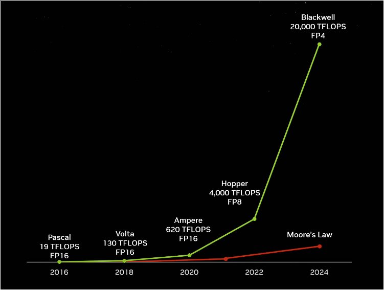
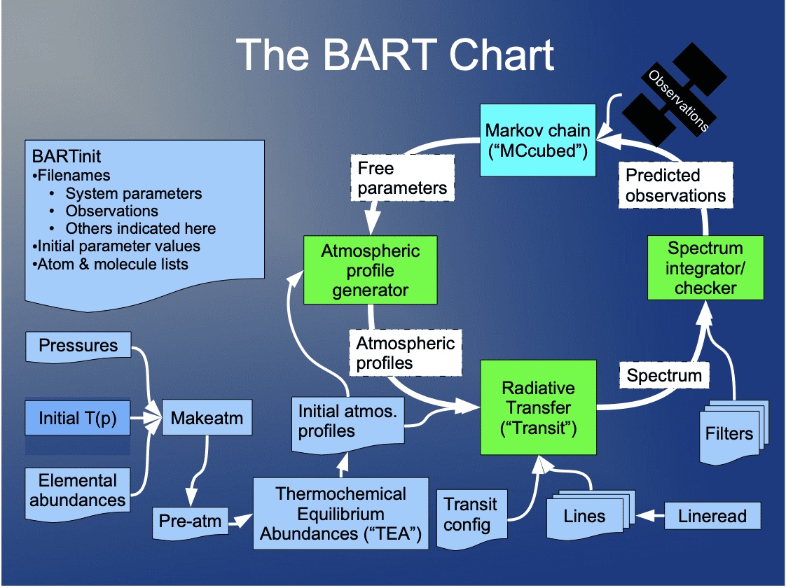

Methods for reproducible computational research
David Wright
What we’ll cover today
- The current issues and motivation
- Practices and design to boost reproducibility
- Tools for reproducible research
The issue
Replication crisis
“If it’s not reproducible, it’s not science.”
- A large fraction of researchers face issues or outright fail when they try to reproduce their peers’ work — the “Replication Crisis”
- This isn’t just limited to computational research
- However, the issue has been accelerated by ever-increasing computational resources that enable increasingly complex methods and data analyses

Reproducible practices and design
Reproducible practices
What can you do day-to-day?
- Keep a digital lab notebook
- How?
Appendix A of 2104.12522; Reproducible Research License (RRL)
Digital lab notebook
- This should be plain text—it will outlive you
- One notebook per project is the easiest way to organize
- Treat it like an actual lab notebook. Make entries whenever you enter “the lab”
- Write down what you’re working on, problems you’ve solved, input parameters for simulations you’re running, links to resources you’ve used, etc.
Example lab notebook entry
* [2022-05-12 Thu 17:02] Making new exo root image :exo:
:LOGBOOK:
CLOCK: [2022-05-12 Thu 18:02]--[2022-05-12 Thu 19:02] => 1:00
:END:
Use disk sa12fb
Delete all partitions using fdisk.
Make new partitions
Create a partition table and partition accordingly.
New root disk is at /dev/sdb
> parted /dev/sdb
> mktable msdos
>> mkpart primary 0G -40G
>> mkpart primary -40G 100%
>> align-check optimal 1
>> align-check optimal 2
>> quit
> mkfs.ext4 -L sa12fb1 /dev/sdb1
> mkswap -L sa12fb2 /dev/sdb2
OUT:[2022-05-12 Thu 19:02]Appendix A of 2104.12522; Reproducible Research License (RRL)
Reproducible history
- You should be using version control software
- git is a reasonable choice
- If you’re version controlling larger artifacts, there are other options we’ll discuss later
- Version control your lab notebook(s) as well
- Upload your git repositories to a git forge like GitHub or GitLab for collaboration
Appendix A of 2104.12522; Reproducible Research License (RRL)
Reproducible by design
- Design your pipelines and packages with reproducibility in mind
- A good example of thoughtful design: BART
- Copies all inputs into output directory
- Stores metadata that helps reproduce the run, like the software version, CPU architecture, etc.
- See also Event hoRyzen

Appendix A of 2104.12522; Reproducible Research License (RRL)
Tools for reproducibility
Reproducible history (again)
- git + zenodo
- zenodo is an immutable data storage service
- Issued a DOI for each record
- Automatic record creation from GitHub releases
- Example record: PTArcade

Reproducible artifacts
- Again, zenodo!
- 50GB limit per artifact, but you can request more
- Example: MCMC chains from a gravitational wave astrophysics paper
Reproducible environments
- This is a very crowded space with many tools aiming to accomplish the same thing
- I’ll focus on Python environments
- We’ll look at container and non-container solutions
Reproducible environments without containers
- Most researchers using Python are using Conda
- Conda environments by themselves are not exactly reproducible!
- We need exact versions, platforms, etc.
- One tool that does this is conda-lock
# generate a multi-platform lockfile
conda-lock -f environment.yml -p osx-64 -p linux-64
# optionally, update the previous solution, using the latest version of
# pydantic that is compatible with the source specification
conda-lock --update pydantic
# create an environment from the lockfile
conda-lock install [-p {prefix}|-n {name}]
# alternatively, render a single-platform lockfile and use conda command directly
conda-lock render -p linux-64
conda create -n my-locked-env --file conda-linux-64.lockReproducible environments without containers (cont.)
Conda is ok, but it’s not great
A newcomer to environment management is Pixi
Supports multiple languages including Python, C++, and R using Conda packages
Compatible with Linux, Windows, macOS (including Apple Silicon)
Always includes an up-to-date lock file
Allows you to install tools per-project or system-wide
Entirely written in Rust and built on top of the rattler library
Reproducible environments without containers (cont.)
- Pixi environments (and more) are configured through the standard
pyproject.tomlconfiguration file, with support for PyPI and conda-forge
[project]
name = "my_project"
requires-python = ">=3.9"
dependencies = [
"numpy",
"pandas",
"matplotlib",
]
[tool.pixi.project]
channels = ["conda-forge"]
platforms = ["linux-64", "osx-arm64", "osx-64", "win-64"]
[tool.pixi.dependencies]
jax = "*"Pixi lockfile
version: 5
environments:
default:
channels:
- url: https://conda.anaconda.org/conda-forge/
indexes:
- https://pypi.org/simple
packages:
linux-64:
- conda: https://conda.anaconda.org/conda-forge/linux-64/_libgcc_mutex-0.1-conda_forge.tar.bz2
packages:
- kind: conda
name: _libgcc_mutex
version: '0.1'
build: conda_forge
subdir: linux-64
url: https://conda.anaconda.org/conda-forge/linux-64/_libgcc_mutex-0.1-conda_forge.tar.bz2
sha256: fe51de6107f9edc7aa4f786a70f4a883943bc9d39b3bb7307c04c41410990726
md5: d7c89558ba9fa0495403155b64376d81
license: None
purls: []
size: 2562
timestamp: 1578324546067Reproducible environments with containers
- Docker and Apptainer (Singularity) are the dominant choices for containerized environments
- These are great! “Works on my machine” -> Package up your machine
Example Dockerfile
FROM python:3.12
WORKDIR /usr/local/app
# Install the application dependencies
COPY requirements.txt ./
RUN pip install --no-cache-dir -r requirements.txt
# Copy in the source code
COPY src ./src
EXPOSE 5000
# Setup an app user so the container doesn't run as the root user
RUN useradd app
USER app
CMD ["uvicorn", "app.main:app", "--host", "0.0.0.0", "--port", "8080"]Reproducible environments with containers (cont.)
- However, containers are also not exactly reproducible!
- Base image may update, dependencies may change, etc.
- Reproducible container builds
- Latest versions of Debian support installing from a snapshot
# Base image must be Debian 13 (trixie) or later: https://salsa.debian.org/apt-team/apt/-/merge_requests/291
FROM debian:trixie-20230904-slim
ENV DEBIAN_FRONTEND=noninteractive
RUN \
--mount=type=cache,target=/var/cache/apt,sharing=locked \
--mount=type=cache,target=/var/lib/apt,sharing=locked \
: "${SOURCE_DATE_EPOCH:=$(stat --format=%Y /etc/apt/sources.list.d/debian.sources)}" && \
snapshot="$(/bin/bash -euc "printf \"%(%Y%m%dT%H%M%SZ)T\n\" \"${SOURCE_DATE_EPOCH}\"")" && \
: "Enabling snapshot" && \
sed -i -e '/Types: deb/ a\Snapshot: true' /etc/apt/sources.list.d/debian.sources && \
: "Enabling cache" && \
rm -f /etc/apt/apt.conf.d/docker-clean && \
echo 'Binary::apt::APT::Keep-Downloaded-Packages "true";' >/etc/apt/apt.conf.d/keep-cache && \
: "Fetching the snapshot and installing ca-certificates in one command" && \
apt-get install --update --snapshot "${snapshot}" -o Acquire::Check-Valid-Until=false -o Acquire::https::Verify-Peer=false -y ca-certificates && \
: "Installing gcc" && \
apt-get install --snapshot "${snapshot}" -y gcc && \
: "Clean up for improving reproducibility (optional)" && \
rm -rf /var/log/* /var/cache/ldconfig/aux-cacheReproducible pipelines
- What if our work has multiple (in)dependent steps?
- We can define our pipeline as code
# Pixi tasks
[tasks]
# Commands as lists so you can also add documentation in between.
configure = { cmd = [
"cmake",
# Use the cross-platform Ninja generator
"-G",
"Ninja",
# The source is in the root directory
"-S",
".",
# We wanna build in the .build directory
"-B",
".build",
] }
# Depend on other tasks
build = { cmd = ["ninja", "-C", ".build"], depends-on = ["configure"] }
# Using environment variables
run = "python main.py $PIXI_PROJECT_ROOT"
set = "export VAR=hello && echo $VAR"
# Cross platform file operations
copy = "cp pixi.toml pixi_backup.toml"
clean = "rm pixi_backup.toml"
move = "mv pixi.toml backup.toml"Reproducible pipelines (cont.)
- What if we need something more advanced?
- Use Snakemake
- Snakemake uses a DSL built on Python to define a pipeline as code
- Specify inputs/outputs, dependencies, etc. and Snakemake builds a DAG for your pipeline
- Snakemake will cache steps in your pipeline and only run them again when it needs to